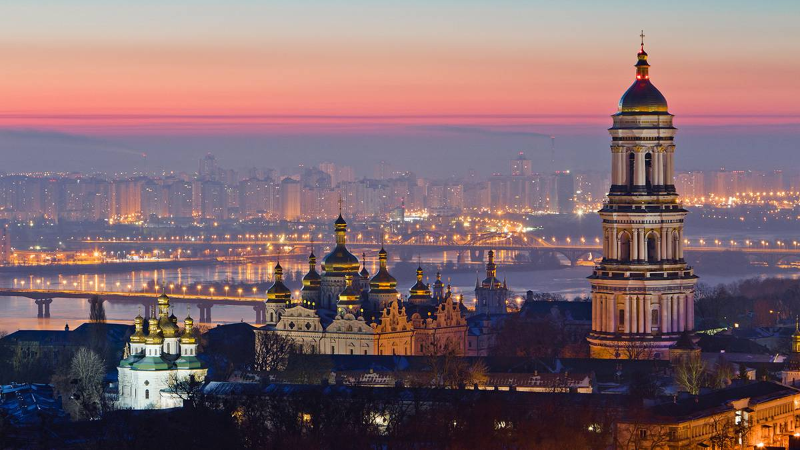

Україна
Держава, розташована у Східній Європі, охоплює південний захід Східноєвропейської рівнини, частину Східних Карпат і Кримські гори. Межує з Румунією і Молдовою на південному заході, з Угорщиною, Словаччиною та Польщею на заході, з Білоруссю на півночі та з Росією на сході й північному сході. На півдні омивається Чорним та Азовським морями. Площа становить 603 700 км²[7]. Найбільша за площею країна серед повністю розташованих у Європі

Декілька цікавих фактів про Україну
- Перша у світі конституція, в які окреслили права громадян та уряду, була розроблена та введена в дію у 1710 році українським гетьманом Пилипом Орликом. Для порівняння, конституція США, була розроблена і прийнята у 1787 році.
- Запорізька Січ — суспільно-політична та військово-адміністративна організація українського козацтва, що була заснована у 1553-1554 роках, сьогодні вважається одним з перших демократичних утворень у світі.
- З 12 лавр світу 4 знаходяться в Україні: це Києво-Печерська лавра (Київ, існує з 1051 року), Почаївська лавра (Почаїв, Тернопільської області, з 1833), Свято-Успенська Святогірська лавра (Святогірськ, Донецької області (отримала статус лаври у 2004 році) та Свято-Успенська Унівська лавра студійського уставу (Унів з 1898).
- Українські народні пісні стали підґрунтям для створення багатьох світових музичних шедеврів. Наприклад, композиція “Summertime” Джорджа Гершвіна була написана на основі української колискової “Ой, ходить сон коло вікон”, яку він почув у виконанні Національного хору України під керівництвом Олександра Кошица.
- Україна відмовилася від третього у світі (після США та рф) за величиною арсеналу ядерної зброї. У момент проголошення незалежності, на території України було розташовано більш як 1000 ядерних боєголовок і ракет. Чому? Відповідь тут.
- Найстародавніша у світі мапа, вибита на кістці мамонта, а також найстародавніше поселення Homo Sapiens знайдені в Україні, у селі Межиріччя Рівненської області. Їм 14,5-15 тисяч років.
Коротко про автора
Написати про себе